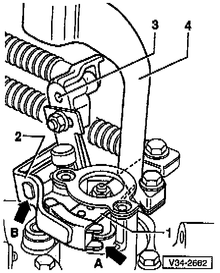

Shift Linkage on Transmission

1 - Gear selector lever
2- Relay lever
- Engages in guide rail of gear selector lever (arrow -A-)
- Lubricate with MoS2 grease
3 - Actuating arm .
- Flats (arrow -B-) on pivot pin for relay lever mounting; can be installed in one position only
4 - Balance weight
- Fasten to gear selector lever, refer to Replacement. Service and Repair
NOTE: For ease of illustration the linkage and the Back-up Light Switch are not shown in the illustration.